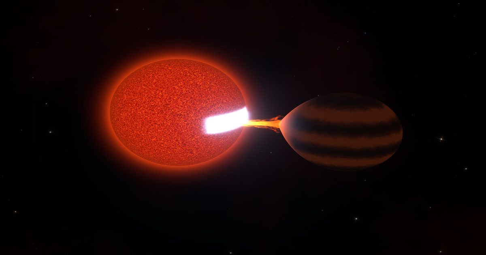

Далекая звезда медленно перекусывает коричневым карликом
Это поглощение может занять миллиарды лет.
Сообщение A Distant Star is Slowly Snacking on a Brown Dwarf впервые появилось на Nautilus.

Это поглощение может занять миллиарды лет.
Сообщение A Distant Star is Slowly Snacking on a Brown Dwarf впервые появилось на Nautilus.